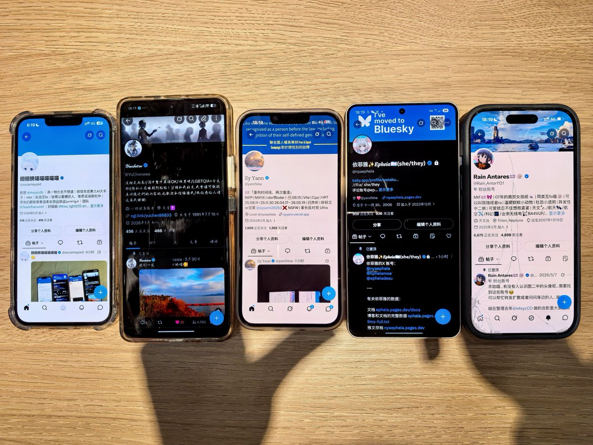

翅翅膀喵喵喵喵喵
@axzameyzed
@Rain_Antar1121 啊呜，姐姐真的好pass🥺

Rain Antares🏳️⚧️🍥
@Rain_Antar1121
更大的面面(*ෆ´ ˘ `ෆ*)♡怎么都是前天的事了我有睡这么久吗）抱住了大家吸过来的@axzameyzed 喵🥰
陪大家打卡梧桐大道ww下着挺大的雨…水蒙蒙的氛围能在地面上浸出朦胧的反光感呢😘然后逛了一圈美龄宫…好羡慕这个梳妆台巨大的镜子🥹
看桌子上摆的菜看饿了于是一起去吃了倉寿司😋贴着大家超开心喵～ https://t.co/G0aILBCRQQ https://t.co/q742AnSJsm